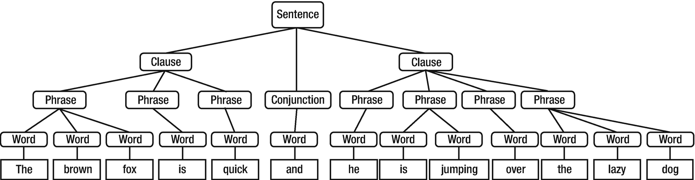
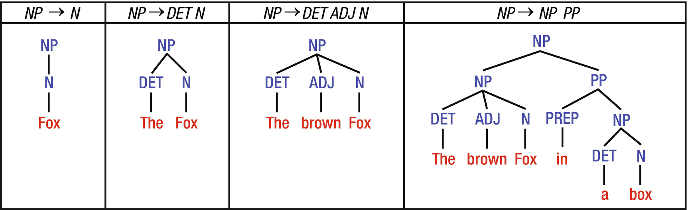
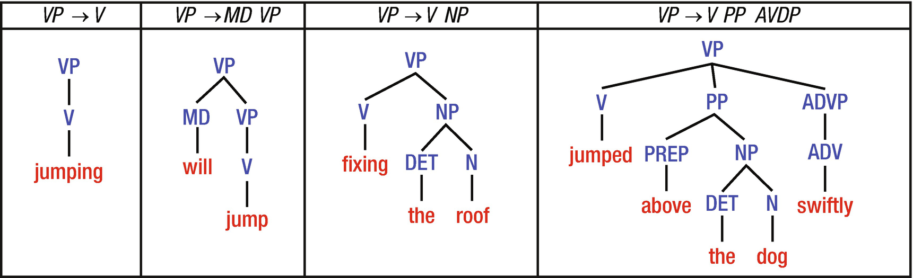
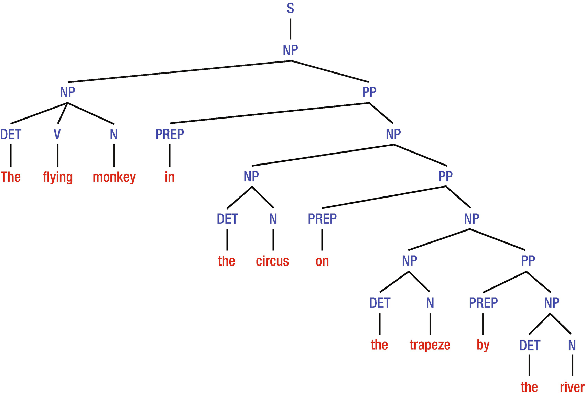

Syntactic Structure¶
sentence = “The brown fox is quick and he is jumping over the lazy dog”
 Source: Figure 1-4 from Chapter1. Sarkar (2019)
hierarchy of sentence → clause → phrase → word
Grammar¶
Reading Sarkar Ch.1 (21-32)
Constituency Grammar¶
Represents the internal structure of sentences in terms of a hierarchically ordered structure of its constituents.
Constituents: NP (noun phrase), VP (verb phrase), PP (prepositional phrase), AdvP, AdjP, S (sentence)
Noun Phrase 
Source: Figure 1-13 from Chapter1. Sarkar (2019)
Verb Phrase
 Source: Figure 1-14 from Chapter1. Sarkar (2019)
Prepopsitional Phrase
 Source: Figure 1-15 from Chapter1. Sarkar (2019)
Source: Figure 1-15 from Chapter1. Sarkar (2019)
Sentence  Source: Figure 1-16 from Chapter1. Sarkar (2019)
Question 1: Write down a simple sentence (Noun Phrase and Verb Phrase)
Question 2.: Draw a syntactic tree